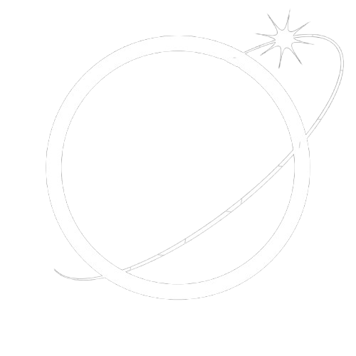
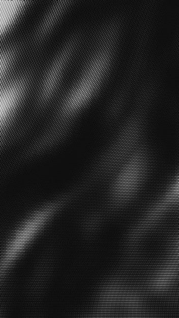

Save your Chrome. Stay in control.
Save & Restore
with one click
Users and Supportive
Community

Save entire sessions — windows, tab groups, pinned tabs and order — and restore them exactly, even after a crash.
Alt+Shift+S to save · Alt+Shift+R to restore — remappable.

Save your Chrome. Stay in control.
Users and Supportive
Community
Save your Chrome tabs, groups and windows — and restore them whenever you need.
Built for people who run 20–80 tabs on purpose — and have lost them once already.
Force quit, update, profile glitch — and the 40 tabs you were thinking in are gone.
Most tools hand back a flat list of URLs: your groups, pins and window order are gone.
Cloud-only tools put your browsing history on someone else's server before you can save a tab.
Everything below works offline, with no account, for free.
Windows, tab order, groups (name, color, collapsed state), pinned tabs, focused window — rebuilt, not just listed.
Live Backup snapshots continuously; when Chrome dies, a red badge offers your pre-crash state — with recovery points to go further back.
Alt+Shift+S to save, Alt+Shift+R to restore last. Remappable at chrome://extensions/shortcuts.
Drag, multi-select, group/ungroup, rename with Chrome's colors, search by name, URL or title. Soft-delete with 30-day undo.
Pen, highlight, shapes, text and sticky notes drawn on the page — stored as data, never modifying the site itself.
Everything lives in your browser's storage. Cloud sync exists but is opt-in, off by default, and capped free at 100 sessions.
THREE STATES,
TWO SHORTCUTS.
One keystroke snapshots every window, group and pinned tab as a named session — or use the popup to save one window.
A continuously updated snapshot in the background, with a retention window you control. Nothing is uploaded.
After a crash, a restart, or just Tuesday — get the browser back the way it was, structure intact.
Orbitabs popup dashboard showing saved session cards with folders and tags.
Orbitabs crash recovery banner offering the pre-crash session.
Orbitabs markup overlay drawing on a web page.
At Orbitabs, every session is designed with structure, stability, and peace of mind for users who need to organize their digital space.
No analytics, no trackers, no advertising, no third-party SDKs. Sessions live in chrome.storage.local and work fully offline with no account.
The only network calls the extension ever makes are to its own backend — and only when an account feature you switched on requires it. Local-only mode hard-disables all of it.
Fair questions. Everything you need to know about Orbitabs, local storage, and keeping your tabs safe.
Yes — save, restore, crash recovery, organizer and import/export are free with no account. Cloud sync is free up to 100 saved sessions. A paid "Pro" (unlimited sync) may come later; core features will never be behind a paywall.
Add to ChromeNothing by default. Everything stays in your browser's storage. Cloud sync is opt-in and off by default; when you enable it, your saved sessions (URLs, titles, structure) upload to our own backend — never page content, never trash. See the privacy policy for the exact list.
Chrome restores only its last session, gives you no named sessions or recovery points, and loses everything on a profile-level crash. Orbitabs keeps multiple named sessions, auto-snapshots, and rebuilds groups, pinned tabs and window focus exactly.
Never. You act, Orbitabs follows. Destructive actions are always confirmed, soft-deleted, and recoverable from Trash for 30 days.
Chrome 116 and newer (Chromium-based Edge support is planned). Firefox is the most-requested port — it isn't built yet, and we don't ship dates we can't keep.
Settings → export a single JSON file. Import is additive and never overwrites what you have. An optional account adds cross-device sync, a web dashboard and 30-day share links.
Free on the Chrome Web Store. No account required to start — install and press Alt+Shift+S.
Add to Chrome — freeStore link goes live on launch day. Questions before then:
orbitabsnoreply@gmail.com